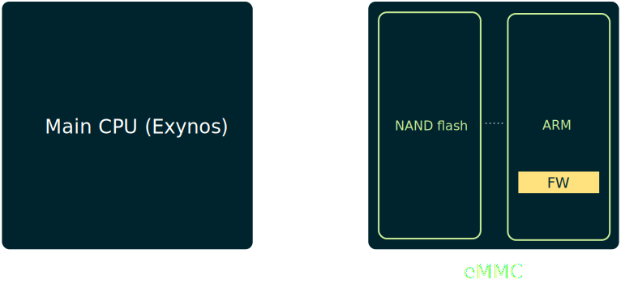
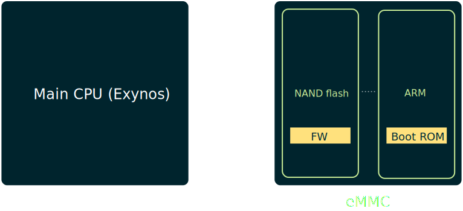

eMMC Hacking
(or: how I fixed long dead Galaxy S3 phones)
Oran AvrahamJanuary 2018
"Sudden Death Syndrome"
Spoiler alert: they did
(Well, kind of...)Diagnosis
This is a working S3.

And this one is dead.

If you're lucky, you get this.

You also get "download mode".
How S3 works (take 1)
Then, samsung dropped a patch.
if (!strncmp(host->card->cid.prod_name, "VTU00M", 6) &&
(host->card->cid.prod_rev == 0xf1) &&
(mmc_start_movi_smart(host->card) == 0x2))
host->card->movi_ops = 0x2;
if (host->card->movi_ops == 0x2)
mmc_start_movi_operation(host->card);
mmc: Soft-patch MoviNAND VTU00M (16GB) eMMC failure
Linux/drivers/mmc/core/mmc.c
eMMC bus introduction
Embedded Multimedia Card
eMMC is the de-facto standard storage for phones
SD card in BGA form


HardKernel ODROID eMMC reader board
Essentially a NAND flash chip with convenient bus
eMMC commands
64 commands (CMD0, CMD1, ..., CMD63), e.g.:
32-bit argument
Categorized into classes
Class 8 contains an interesting set of commands

Back to the patch
if (!strncmp(host->card->cid.prod_name, "VTU00M", 6) &&
(host->card->cid.prod_rev == 0xf1) &&
(mmc_start_movi_smart(host->card) == 0x2))
host->card->movi_ops = 0x2;
if (host->card->movi_ops == 0x2)
mmc_start_movi_operation(host->card);
mmc: Soft-patch MoviNAND VTU00M (16GB) eMMC failure
Linux/drivers/mmc/core/mmc.c
int mmc_start_movi_operation(struct mmc_card *card)
{
mmc_movi_cmd(card->host, 0xEFAC62EC); // Enter secret backdoor mode
mmc_movi_cmd(card->host, 0x10210000);
mmc_movi_erase_cmd(card->host, 0x00040300, 0x4A03B510); // 10 B5...
mmc_movi_erase_cmd(card->host, 0x00040304, 0x28004790);
mmc_movi_erase_cmd(card->host, 0x00040308, 0xE7FED100);
mmc_movi_erase_cmd(card->host, 0x0004030C, 0x0000BD10);
mmc_movi_erase_cmd(card->host, 0x00040310, 0x00059D73);
mmc_movi_erase_cmd(card->host, 0x0005C7EA, 0xFD89F7E3);
mmc_movi_cmd(card->host, 0xEFAC62EC); // Leave secret backdoor mode
mmc_movi_cmd(card->host, 0x00DECCEE);
}
mmc_movi_cmd is basically eMMC CMD62
This is an eMMC...
(next to a Thumb™)
How S3 works (take 2)
patch.bin
10 B5 03 4A 90 47 00 28 00 D1 FE E7 10 BD 00 00 73 9D 05 00
Lo and behold...
Here comes Samsung's patch.Please prepare your C skillz.
void sub_40300()
{
if (!sub_59D72())
while (1);
}

DEAR S3 CUSTOMERS
WE "FIXED" IT

Galaxy S3 freezing with lockups, screen not responding...
and ending up with unsual rebooting and bootlooping... Angry S3 users reporting this problem...
Galaxy S3 keeps freezing every 5 mins (50+ freezes a day)
0xEFAC62EC 0x10210000
mmc_movi_vendor_cmd(card, 0xEFAC62EC);
mmc_movi_vendor_cmd(card, 0x10210000);
mmc_movi_erase_cmd(card, 0x0004DD9C, 0x000000FF);
mmc_movi_vendor_cmd(card, 0xEFAC62EC);
mmc_movi_vendor_cmd(card, 0x00DECCEE);
[MMC] Patch the firmware of certain Samsung emmc parts to fix a bug
Linux/drivers/mmc/core/quirks.c
But there was something else afterwards...
#ifdef TEST_MMC_FW_PATCHING
mmc_movi_vendor_cmd(card, 0xEFAC62EC);
mmc_movi_vendor_cmd(card, 0x10210002); // this is a 2
mmc_movi_erase_cmd(card, 0x0004DD9C, 0x00000004);
mmc_movi_read_cmd(card, (u8 *)buffer);
pr_debug("buffer[0] is 0x%x\n", *(u8 *)buffer);
mmc_movi_vendor_cmd(card, 0xEFAC62EC);
mmc_movi_vendor_cmd(card, 0x00DECCEE);
#endif
Maybe this is Samsung's way of reading the RAM?
for (unsigned addr = 0; addr <= 0x80000; addr += 4) {
mmc_movi_vendor_cmd(card, 0xEFAC62EC);
mmc_movi_vendor_cmd(card, 0x10210002);
mmc_movi_erase_cmd(card, addr, 0x00000004);
mmc_movi_read_cmd(card, (u8 *)buffer);
mmc_movi_vendor_cmd(card, 0xEFAC62EC);
mmc_movi_vendor_cmd(card, 0x00DECCEE);
write(outfd, buffer, 4);
}
Reversing the firmware?
The firmware contained strings! a string :-("REL_ASSERT : (PC[%x] SP[%x] LR[%x])\n"eMMC Internals
Flash translation layer - FTL
Firmware is responsible for:
- Wear leveling
- Bad block management
- eMMC bus communication

VTU00M 0xF1 bug üêû
FTL has to modify metadata on writes.
FTL metadata gets corrupted once due to a bug
⇒ On each boot, FTL raises a CPU exception
⇒ CPU enters an infinite loop
⇒ eMMC is essentially dead
Samsung's patch: Metadata about to get corrupted? Halt CPU!
DO NOT TRY TO FIX THE BUG...
INSTEAD, REALIZE THERE IS NO BUG
eMMC Memory layout
Boot ROM
Initializes hardware and loads firmware *from flash*
Has its own machinery for eMMC commands
(when firmware loading fails)
Basically a stripped down firmware (no FTL)
How S3 works (take 3)
If only we could talk to the boot ROM...
However, firmware loading actually succeeds
Firmware executes, enters a loop ⇒ no chance
Right?
Interrupt #7
On boot (sub_7DBC), a timer is being set for 35ms
If during this period some interrupt fires -
a value (MMIO) is compared to 0x69FF87A9
In that case - firmware loading is skipped!
Wait, what?
Phone is dead. How do we even talk with the eMMC?
Sure, I could've used a hardware mod, however...
Recap: If you're lucky, you get this.
But how?
How S3 works (take 4)
A friend had a bricked S3 which *does load* sboot
eMMC has two partitions: boot and user
Only user's metadata was corrupted
I suspect this is a common scenario
How S3 breaks
sboot has a DFU mode called "download mode"
Protocol over USB; Loke ⟷ Odin
No way of sending low-level eMMC commands
sboot Exploitation
Taken from sboot PIT packets handling
if (is_dump == 1) {
int sz, data, part;
part = /* read from USB packet */;
sz = -500 * part + 0x2000;
if (sz >= 500)
sz = 500;
send_packet(&pit_buf[500 * part], sz);
} else {
sz = /* read from USB packet */;
reply_packet(pkt_type, 0);
read_packet(pit_buf, sz);
reply_packet(pkt_type, 0);
}
sboot vulnerabilities
- Heap relative read
- Heap overflow
Eventually found out this is actually not a 0-day
Unpatched for S3, but silently fixed in recent devices
But what if it's really dead?
How S3 utterly breaks
How S3 almost breaks
Repeat for x: (0 ... 63)
- Power off eMMC
- Power on eMMC
- Quickly send CMDx with arg
0x69FF87A9 - Wait 200ms
- Send any command supported by boot ROM
- Check if you get a response
✗ CMD0(0x69FF87A9) fails
✓ CMD1(0x69FF87A9) works!
eMMC repairing
New firmware
There are two revisions of VTU00M:
- Firmware 0xf1 - buggy
- Firmware 0xf7 - bug is fixed
Goal: Update chip to 0xf7 and format FTL metadata
New eMMCs and where to find them
Go over pictures of chinese development boards...